myCobot 280 Jetson Nano
更换TF卡教程
设备底座正面展示图

- 第一步：查看确认TF卡槽位置，TF卡在设备内部，这里需要动手拆除底座下盖更换
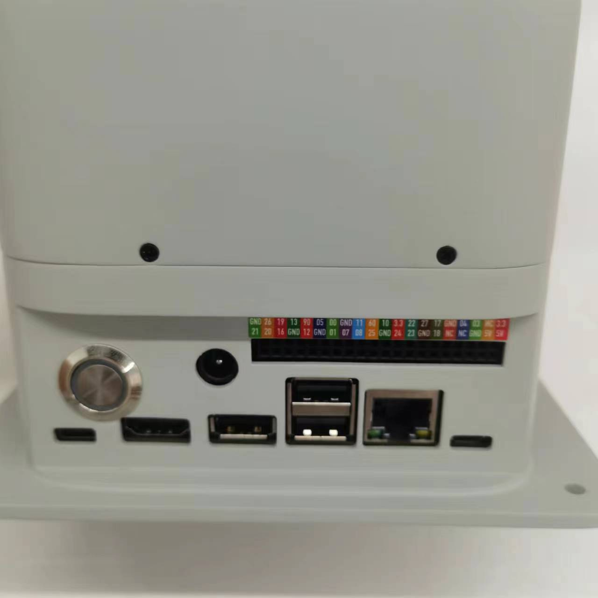
- 第二步：取出正面的2颗固定螺丝，使用1.5十字螺丝刀
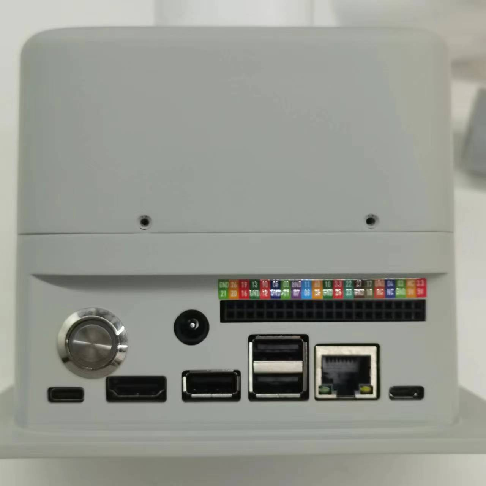
- 第三步：取出底部面的6颗2*8固定螺丝，使用1.5MM十字螺丝刀
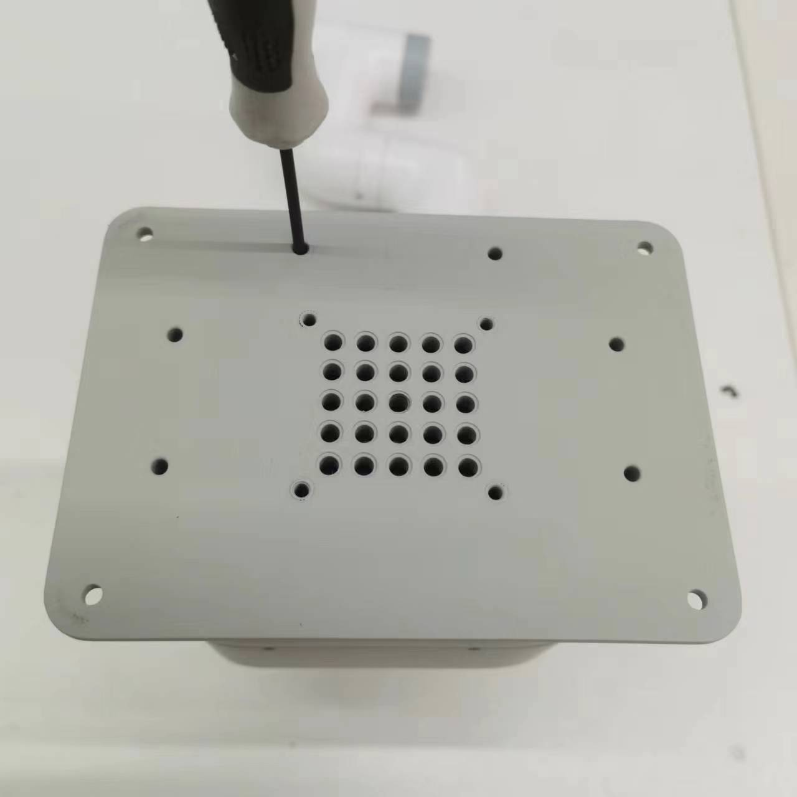
- 第四步：拔开舵机（黑红白3PIN）连接线

- 第五步：需拔下风扇连接线，电源指示灯连接线，电源黑红线
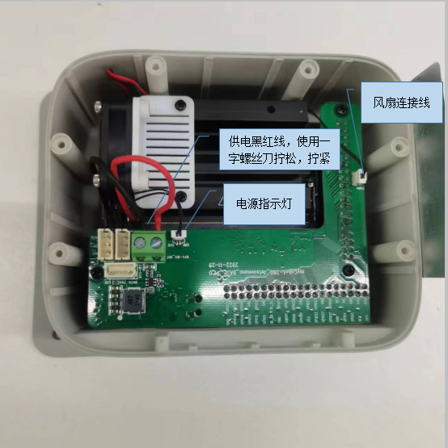
- 第六步：取出图中绿色PCBA板，取出板上3颗固定螺丝

- 第七步：取出六角固定柱3颗
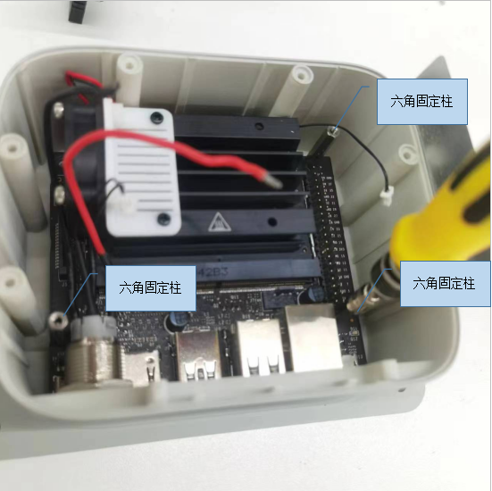
- 第八步：取出主控板（请注意防静电措施）
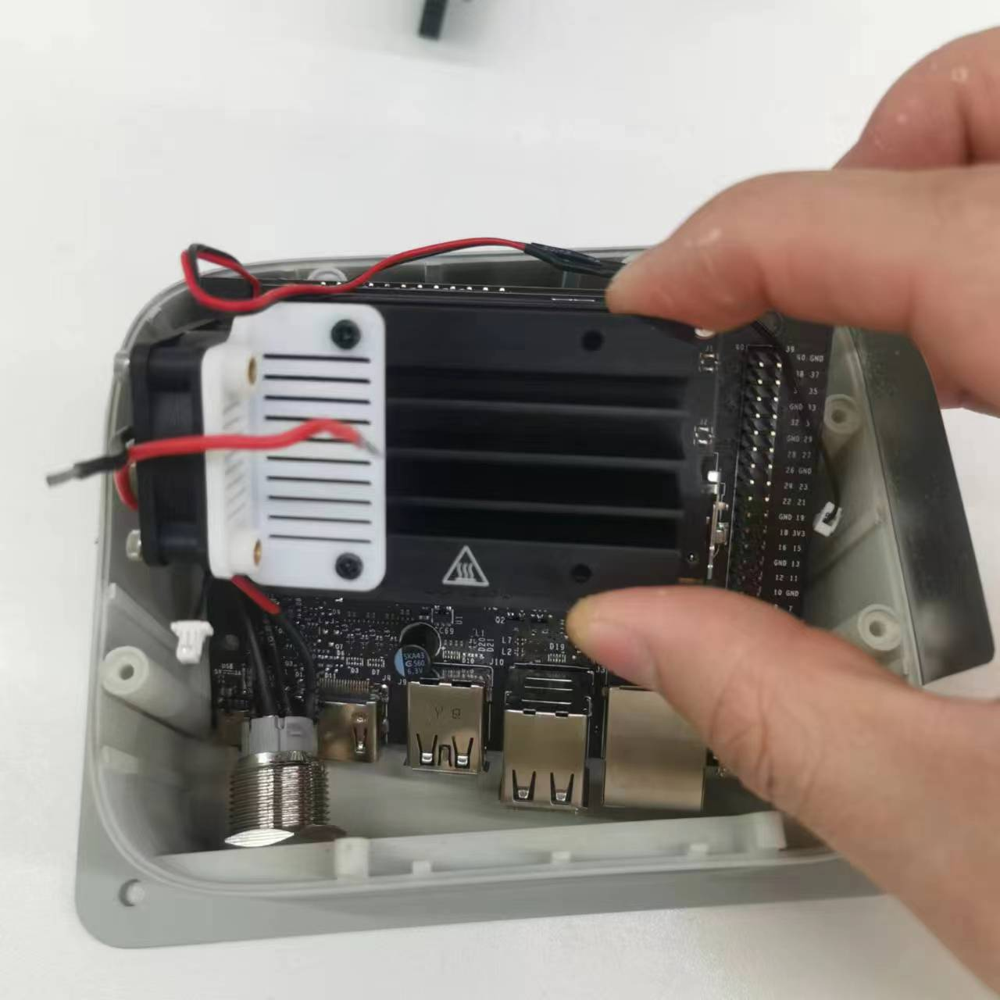
- 第九步：取出TF卡，或更换TF卡。 （请注意防静电措施）
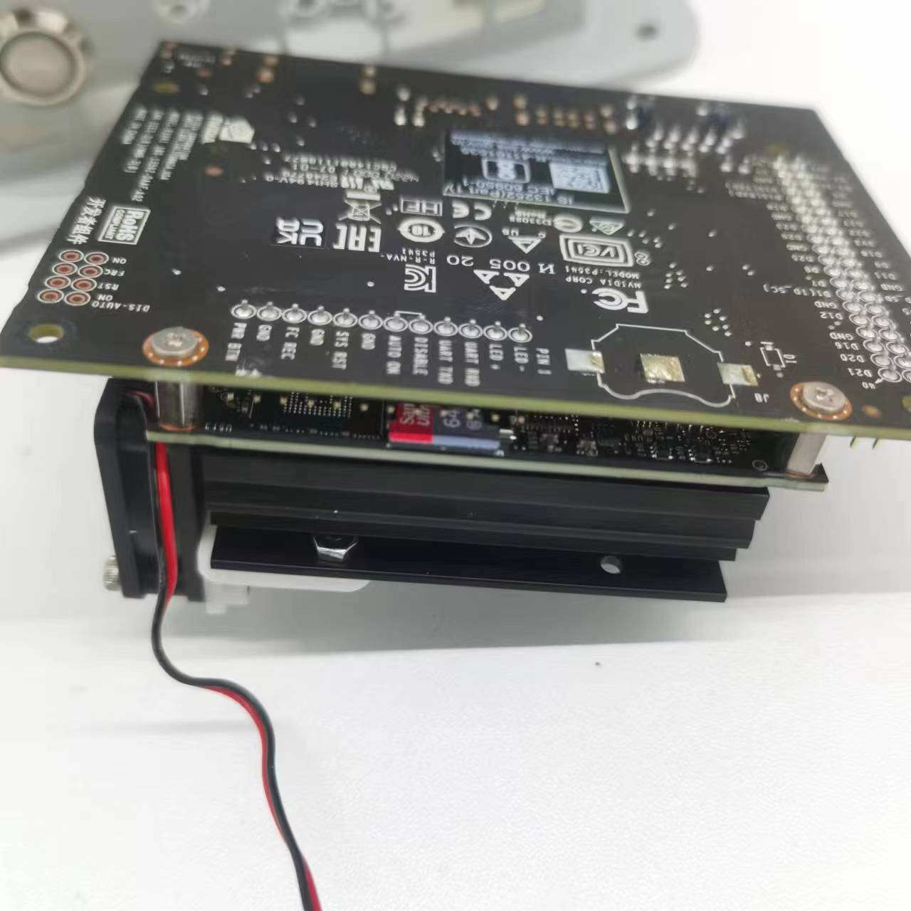
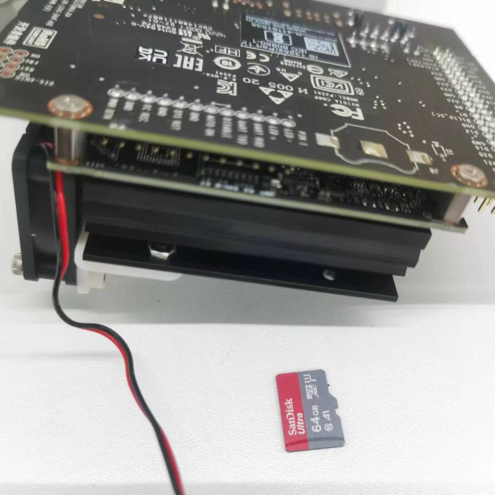
- 第十步：装回主控板

- 第十一步：装配注意要点
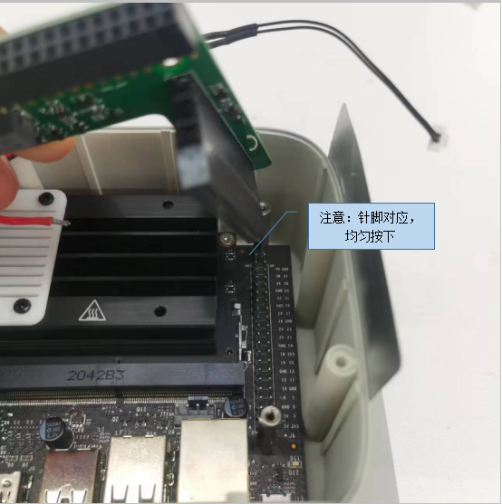
- 第十二步：装配注意要点
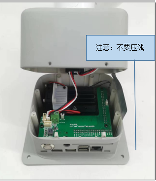
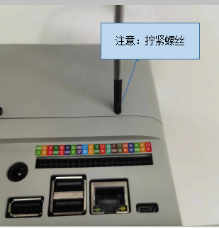
镜像烧录
本章介绍镜像下载和烧录步骤，如已下载所需镜像，可直接查看烧录步骤
1.1 下载链接
| 产品名称 | 系统版本 | 下载链接 | SHA256 Hash |
| myCobot 280 JetsonNano | ubuntu 18.04 | 点击下载 | 2f1e40c1480b077bcc83abd3b79ac175f25d21e9cc344a014636167ee2eb087c |
1.2 烧录步骤
Step 1: 下载镜像后解压文件，可以看到一个光盘映像文件。
Step 2: 下载 Win32DiskImager 软件。
下载地址：Win32DiskImager

Step 3: 取下机械臂底部的 SD 卡，使用读卡器将 SD 卡插入电脑。

Step 4: 打开 Win32DiskImager 烧录软件。

Step 5: 选择 E 盘和光盘映像文件，然后点击“写入”，即可开始写入。 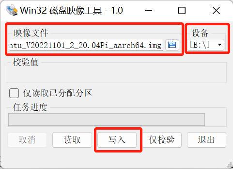
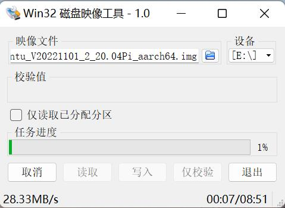
Step 6: 写入成功后会有提示。
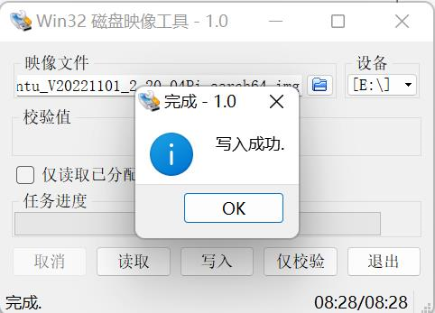